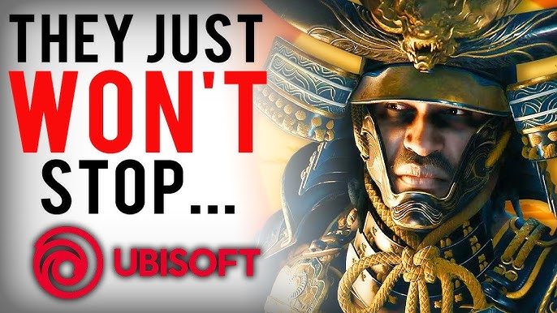

Ubisoft

Record-Breaking Efficiency
Executives at Ubisoft announced this week that the company is enjoying unprecedented success after closing several studios and canceling multiple projects. Leadership described the move as a bold new strategy designed to “streamline creativity.” According to insiders, the fewer games that exist, the easier it is to make sure they’re all hits. Investors responded enthusiastically by rapidly selling their shares.

A Revolutionary New Approach to Development
Ubisoft leadership proudly explained that canceling games before they release is the ultimate way to avoid poor reviews. “If players can’t play it, they can’t complain about it,” said one executive during a press conference. Analysts praised the company’s ability to solve development problems by simply removing the development entirely. The strategy has been described as “forward-thinking” and “technically flawless.”

Overall Summary
Ubisoft has entered what executives are calling a “new golden era of efficiency,” marked by studio closures, project cancellations, and widespread restructuring. While some critics have interpreted these developments as signs of instability, company leadership insists they are actually proof of overwhelming success. By reducing the number of active studios and games, Ubisoft says it can concentrate its resources on delivering “the highest quality experiences possible,” while also lowering the risk of disappointing releases. Industry analysts remain fascinated by Ubisoft’s ability to frame nearly every challenge as a strategic triumph. From layoffs described as innovation initiatives to cancelled games rebranded as bold planning decisions, the company continues to present a confident vision of the future. Whether this strategy leads to long-term recovery or simply fewer games remains unclear, but Ubisoft appears determined to prove that success is ultimately a matter of perspective—and very creative press releases.

AAA Budget Meets Indie Results
Despite spending hundreds of millions on development, Ubisoft reassured fans that its games are still competing bravely with small indie projects created by three developers and a laptop. Industry observers say this proves Ubisoft’s commitment to leveling the playing field. “Why dominate the market when you can share it?” said a spokesperson. Indie developers reportedly thanked Ubisoft for keeping competition manageable.

The Power of Strategic Layoffs
Company leadership emphasized that layoffs are not a sign of struggle, but rather a celebration of efficiency. “Every employee we release into the wild is another opportunity for innovation somewhere else,” the company said. Ubisoft described the move as “outsourcing creativity to the entire industry.” Former employees were thrilled to hear they were now part of a broader innovation initiative.